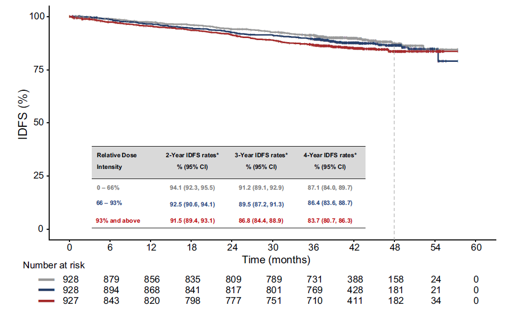

✅ 已複製摘要
AE 管理與衛教指引
×
🗣️ 預期管理與飲食衛教
【預期管理】打預防針，降低恐慌
腹瀉大多發生在
治療第一個月內（中位數約第8天）
。
這代表藥物正在發揮作用，只要在第一次發生時適當處置，
後續的發生率與嚴重度就會大幅下降
。
✅ 建議飲食 (BRAT)
🍌🍚🍎🍞
香蕉/白飯/蘋果泥/吐司
❌ 務必避免
🌶️🥦🍟☕
辛辣 /
高纖
/
油膩
/ 咖啡因
💊 止瀉藥 (Loperamide) 給藥流程
首次發生
2 顆
➔
後續 (每2hr)
1 顆
➔
每日上限
8 顆
📉 腹瀉分級與降劑量決策
Grade 1
每日增加 < 4 次
✅ 維持原劑量
Grade 2
增加 4-6 次 (24hr未緩解)
⏸️ 先暫停用藥
✅ 恢復原劑量
Grade 3/4
增加 ≥ 7 次 或 反覆發作
⏸️ 先暫停用藥
⬇️ 降一階劑量
📊 降劑量不影響長期療效

主動降劑量與原劑量相比，
療效無顯著差異
HR: 0.905
(95% CI: 0.727-1.127)
Ref: Goetz MP, et al.
npj Breast Cancer
. 2024;10:34.
關閉指引
Verzenio 評估工具
💡 AE 衛教指引
重置
基本病理與歷程
ER/PR > 30%
HER2 陰性
使用標準化療
特殊情況未使用可事審允許
使用放療
特殊情況未使用可事審允許
內分泌治療 ≤ 12 周
手術後 ≤ 16 個月
High-Risk Criteria
▶ Neoadjuvant chemo
化療前 ALN 1-3 顆
含N1mi，不含鎖骨上或內乳淋巴結
化療前 Tumor病理(CNB/FNA) Grade 3
化療前 Tumor影像 ≥ 5cm (Unifocal)
化療前 Tumor影像 ≥ 5cm (Multi加總)
化療前 Ki-67 ≥ 20%
自費條件
▶ Adjuvant chemo
手術病理 ALN ≥ 4 顆
手術病理 ALN 1-3 顆
含N1mi，不含鎖骨上或內乳淋巴結
手術病理 Grade 3
手術病理 Tumor ≥ 5cm (Unifocal)
手術病理 Tumor ≥ 5cm (Multi加總)
手術病理 Ki-67 ≥ 20%
自費條件
Exclusion (Self-pay only)
男性患者
ER/PR ≤ 30%
最後更新日期：2026年3月16日
請勾選條件評估
📋 複製健保申請輔助摘要
📊 醫護專業版自費對照表